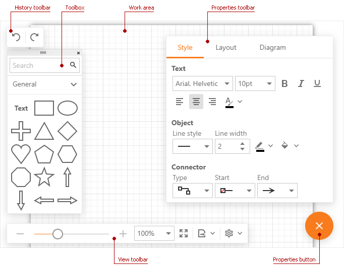
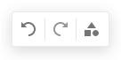
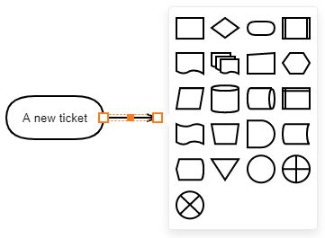
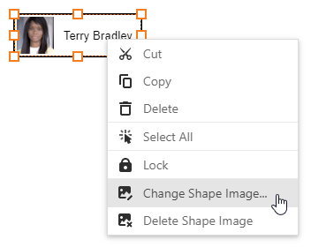
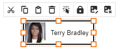
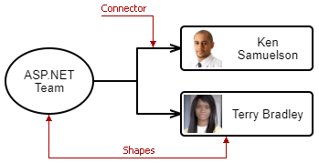

First Look at the Diagram

Diagram Tools
The History toolbar contains Undo and Redo commands that allow you to undo and redo actions. On mobile devises, the toolbar also displays the Show Toolbox button that shows/hides the Toolbox.

The Toolbox allows you to add shapes to your chart. Select View > Settings > Show Toolbox to change the Toolbox's visibility. On mobile devises, there is an additional Show Toolbox button in the History toolbar.
The Properties toolbar allows you to customize shape and connector style settings, change the chart layout, and specify page settings. Click the Properties button to display the toolbar.
The View toolbar contains commands related to the Diagram's view settings.
You can use the Context Toolbox to create a shape at the end of a connector.

The Context Menu appears when you right-click a chart element.

On mobile devises, tap a chart element to display the Context Menu.

The table below lists the menu commands.
Icon Text Description Cut Cuts the selected elements. Copy Copies the selected elements to the clipboard. Paste Pastes the copied elements from the clipboard. Delete Deletes the selected elements. Selects All Select all elements in the document. Bring to Front Moves the selected elements on top of other overlapping elements. Send to Back Moves the selected elements behind other overlapping elements. Lock Locks the selected elements. Unlock Unlocks the selected elements. Insert Shape Image... Shows Insert Image dialog. Change Shape Image... Shows Change Image dialog. Delete Shape Image Deletes an image from the selected shape.
Chart Elements

- Shape - a base chart element.
- Connector - a line that connects shapes. If you move a shape, the connector stretches to it.
- Chart - a group of shapes linked by connectors. A document can contain several unconnected charts.